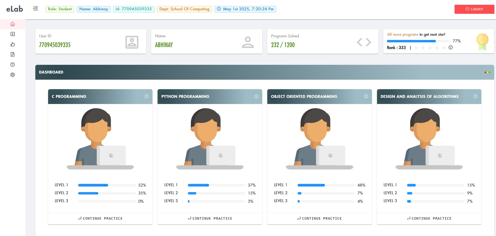

The Design and Analysis of Algorithms (DAA) course really helped me think more critically about solving problems efficiently. Instead of just writing code that works, I learned how to choose or design algorithms that save time and use memory wisely. We explored different techniques like divide and conquer, greedy methods, dynamic programming, and backtracking, and I got to see how the same problem could have multiple solutions with very different performance.
Welcome to my Design and Analysis of Algorithms portfolio! This collection documents my journey through one of computer science's most fundamental courses. I've explored how to design efficient algorithms, analyze their performance, and implement them in real-world scenarios.
Throughout this course, I've gained critical problem-solving skills by mastering various algorithmic paradigms. From designing sorting algorithms to solving complex optimization problems, each challenge has enhanced my analytical thinking and programming abilities.
This portfolio showcases my theoretical understanding through concept explanations, practical implementation through lab exercises, and personal achievements that demonstrate my growth as a programmer and problem solver.
Developed the ability to break down complex problems into manageable components and approach them systematically.
Learned to identify inefficiencies in algorithms and optimize them for better performance in terms of time and space complexity.
Acquired a diverse set of algorithmic strategies to tackle a wide range of computational problems efficiently.
Throughout this course, I've challenged myself beyond classroom requirements by participating in competitive programming events and completing online lab exercises with excellence.
Completed some of the programming challenges with optimal solutions, achieving a distinguished performance in algorithmic implementation.

Advanced News Authenticator is an AI-powered tool that detects fake news using deep learning and NLP techniques. It analyzes user-input text to determine authenticity and highlights misinformation patterns with confidence.
Technologies Used:
Frontend: HTML, CSS, JavaScript
Backend: Python, Flask
AI/ML: PyTorch (BiLSTM model), Keras Tokenizer
NLP: Text cleaning, tokenization, pattern detection (regex)
Dataset: Kaggle Fake and Real News Dataset
Model Output: Fake/Real prediction with confidence score and detected red flags
Here's a quick overview of some key algorithms covered in the course:
Check out detailed concept explanations and lab implementations to gain deeper insights into the world of algorithms.